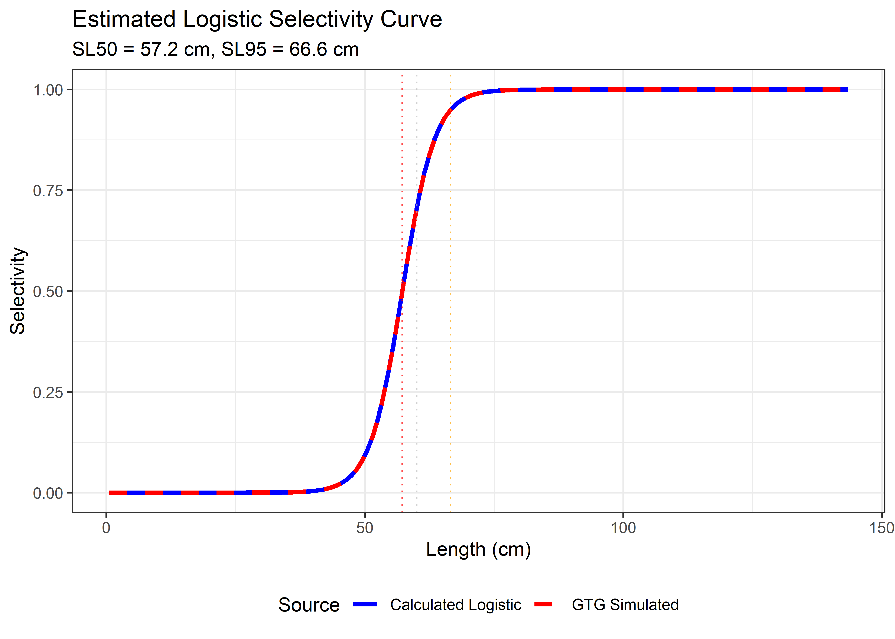

6 Examples
6.1 fit_gillnet_dome function
This section demonstrates how to use the fit_gillnet_dome() function to estimate selectivity parameters for gillnet fisheries. The function fits multiple selectivity models to experimental gillnet data and provides comprehensive model comparison capabilities.
The fit_gillnet_dome() function is designed to:
- Fit multiple selectivity curves to gillnet experimental data
- Handle both unimodal and bimodal selectivity patterns
- Provide automatic model comparison and selection
- Generate plots and statistical summaries
- Support both automatic and manual starting value specification
The function expects input data with the following structure:
- Length measurements or frequency data from experimental gillnet fishing
- Multiple mesh sizes tested simultaneously
- Data organized in a format compatible with the package’s data processing functions
Loading the package and data:
# Load the package
library(fishLengthAssess)
# Load the example gillnet data
data("raw_data_gillnet")
input_data <- raw_data_gillnet
input_data## V1 V2 V3 V4 V5 V6 V7 V8 V9
## 1 52.5 52 11 1 1 0 0 0 0
## 2 54.5 102 91 16 4 4 2 0 3
## 3 56.5 295 232 131 61 17 13 3 1
## 4 58.5 309 318 362 243 95 26 4 3
## 5 60.5 118 173 326 342 199 100 10 11
## 6 62.5 79 87 191 239 202 201 39 15
## 7 64.5 27 48 111 143 133 185 72 25
## 8 66.5 14 17 44 51 52 122 74 41
## 9 68.5 8 6 14 23 25 59 65 76
## 10 70.5 7 3 8 14 15 16 34 33
## 11 72.5 0 3 1 2 5 4 6 15# Define the mesh sizes (cm) used in the experiment
mesh_sizes <- c(13.5, 14.0, 14.8, 15.4, 15.9, 16.6, 17.8, 19)6.1.1 Example 1
6.1.1.1 Fitting unimodal models only
In many cases, the user may want to start with simpler unimodal selectivity models before considering more complex bimodal patterns. Setting run_bimodal = FALSE fits only the three basic dome-shaped models (i.e., norm.loc: Normal common spread, norm.sca: Normal scaled spread, and lognorm: Lognormal).
# Fit unimodal selectivity models only
result_unimodal <- fit_gillnet_dome(
input_data = input_data,
mesh_sizes = mesh_sizes,
run_bimodal = FALSE,
output_dir = "model_plots_unimodal",
length_seq = seq(40, 100, 1)
)The function automatically generates plots for each fitted selectivity model and saves them in the specified output directory (e.g., model_plots_unimodal).
Figure 6.1: Normal location model (norm.loc) selectivity curves and residuals. The top panel shows the selectivity curves for each mesh size, while the bottom panel displays the deviance residuals.
Figure 6.2: Normal scaled spread model (norm.sca) selectivity curves and residuals. The top panel shows the selectivity curves for each mesh size, while the bottom panel displays the deviance residuals.

Figure 6.3: Lognormal model (lognorm) selectivity curves and residuals. The top panel shows the selectivity curves for each mesh size, while the bottom panel displays the deviance residuals.
The function returns a comprehensive list object with results for each fitted model. The user can access the objects using the $ symbol, as follows:
## [1] "norm.loc" "norm.sca" "lognorm"## par s.e.
## Mode(mesh1) 54.600084 0.07305819
## Std dev.(mesh1) 5.147949 0.06709739## par s.e.
## Mode(mesh1) 55.282277 0.06986564
## Std dev.(mesh1) 4.343513 0.05268696## par s.e.
## Mode(mesh1) 54.910902 0.07055028
## Std dev.(mesh1) 4.457549 0.05828204Here is an example of how to access the selection ogive (for all mesh sizes) for the norm.loc model.
# Selection ogive matrix (selectivity by length and mesh size)
print("Selection Ogive Matrix (first 10 rows):")## [1] "Selection Ogive Matrix (first 10 rows):"## Length 13.5 14 14.8 15.4 15.9
## [1,] 52.5 0.920157978 0.72570316 0.3600821 0.1642659 0.07207511
## [2,] 54.5 0.999811030 0.91853023 0.5818113 0.3187592 0.16292195
## [3,] 56.5 0.934163686 0.99971780 0.8083741 0.5318972 0.31668203
## [4,] 58.5 0.750546437 0.93564461 0.9658110 0.7632066 0.52931815
## [5,] 60.5 0.518539308 0.75299822 0.9922508 0.9416860 0.76078103
## [6,] 62.5 0.308060013 0.52110652 0.8765976 0.9991245 0.94026896
## [7,] 64.5 0.157376001 0.31010488 0.6659300 0.9115545 0.99929577
## [8,] 66.5 0.069133924 0.15868658 0.4350173 0.7151468 0.91324127
## [9,] 68.5 0.026115205 0.06982667 0.2443621 0.4824556 0.71767289
## [10,] 70.5 0.008482917 0.02642117 0.1180350 0.2798781 0.48497246
## 16.6 17.8 19
## [1,] 0.01755223 0.0007710961 1.392758e-05
## [2,] 0.04912666 0.0031128820 8.109595e-05
## [3,] 0.11823648 0.0108060347 4.060432e-04
## [4,] 0.24470078 0.0322566740 1.748215e-03
## [5,] 0.43548050 0.0827984754 6.472424e-03
## [6,] 0.66642551 0.1827572547 2.060576e-02
## [7,] 0.87696859 0.3468777475 5.641049e-02
## [8,] 0.99235256 0.5661451417 1.327947e-01
## [9,] 0.96560050 0.7945635876 2.688134e-01
## [10,] 0.80793886 0.9589126819 4.679190e-016.1.1.2 Extracting mesh-specific selectivity
The user can extract selectivity curves for specific mesh sizes:
# Extract selectivity for mesh size 17.8 cm (Normal Location model)
mesh_17_8 <- result_unimodal$selectivity_curves$norm.loc[, c("Length", "17.8")]
# Display first 10 rows
print("Selectivity for 17.8 cm mesh (Normal Location model):")## [1] "Selectivity for 17.8 cm mesh (Normal Location model):"## Length 17.8
## 1 40 4.112843e-09
## 2 41 1.349610e-08
## 3 42 4.264683e-08
## 4 43 1.297710e-07
## 5 44 3.802602e-07
## 6 45 1.072992e-06
## 7 46 2.915577e-06
## 8 47 7.628953e-06
## 9 48 1.922285e-05
## 10 49 4.664261e-05
## 11 50 1.089834e-04
## 12 51 2.452169e-04
## 13 52 5.313158e-04
## 14 53 1.108581e-03
## 15 54 2.227381e-03
## 16 55 4.309570e-03
## 17 56 8.029450e-03
## 18 57 1.440622e-02
## 19 58 2.489010e-02
## 20 59 4.141099e-02# Extract selectivity for mesh size 15.9 cm (Normal common spread model)
mesh_15_9 <- result_unimodal$selectivity_curves$norm.sca[, c("Length", "15.9")]
# Display first 10 rows
print("Selectivity for 15.9 cm mesh (Normal common spread model):")## [1] "Selectivity for 15.9 cm mesh (Normal common spread model):"## Length 15.9
## 1 40 5.864747e-06
## 2 41 1.501946e-05
## 3 42 3.702241e-05
## 4 43 8.783750e-05
## 5 44 2.005859e-04
## 6 45 4.408854e-04
## 7 46 9.327306e-04
## 8 47 1.899292e-03
## 9 48 3.722481e-03
## 10 49 7.022280e-03
## 11 50 1.275055e-02
## 12 51 2.228357e-02
## 13 52 3.748398e-02
## 14 53 6.068924e-02
## 15 54 9.457640e-02
## 16 55 1.418597e-01
## 17 56 2.048048e-01
## 18 57 2.845944e-01
## 19 58 3.806429e-01
## 20 59 4.900204e-016.1.1.3 Calculating aggregated selectivity
Use get_composite_curve() to calculate the combined selectivity across all mesh sizes. The following example shows how to get the aggregated selectivity for the Normal Location model (norm.loc).
# Calculate aggregated selectivity curve
aggregated_selectivity <- get_composite_curve(
result_unimodal$results$norm.loc,
length_seq = seq(40, 100, 1)
)
# Display first 10 values
print("Aggregated selectivity curve (first 10 values):")## [1] "Aggregated selectivity curve (first 10 values):"## Length Selectivity
## 1 40 0.005309309
## 2 41 0.009262737
## 3 42 0.015598858
## 4 43 0.025365112
## 5 44 0.039841359
## 6 45 0.060475153
## 7 46 0.088754824
## 8 47 0.126021978
## 9 48 0.173242333
## 10 49 0.2307717136.1.1.4 Plotting mesh-specific and aggregated selectivity curves
Use plot_mesh_curves() to create plots. The following example shows how to plot selectivity for the Normal Location model (norm.loc).
# Plot selectivity curves for each mesh size
plot_mesh_curves(
result_unimodal,
"norm.loc",
length_seq = seq(40, 100, 1),
save_plot = TRUE,
output_dir = "model_plots_unimodal"
)## Plot saved to: model_plots_unimodal/Curves_norm.loc.jpegFigure 6.4: Mesh-specific and composite selectivity curves
6.1.1.5 Comparing unimodal models
Use the compare_stats function to generate a comprehensive comparison table. This function allows the user to save a CSV file with the outputs.
# Generate comparison table for unimodal models
comparison_unimodal <- compare_stats(
result_unimodal,
include_bimodal = FALSE,
save_csv = TRUE,
filename = "model_plots_unimodal/unimodal_models_comparison.csv"
)## Table saved to: model_plots_unimodal/unimodal_models_comparison.csv| Model | LogLikelihood | Deviance | Mode1 | StdDev1 |
|---|---|---|---|---|
| lognorm | 25014.23 | 704.28 | 54.91 | 4.46 |
| norm.sca | 24979.99 | 772.76 | 55.28 | 4.34 |
| norm.loc | 24934.91 | 862.92 | 54.60 | 5.15 |
6.1.2 Example 2
6.1.2.1 Fitting all models, including bimodals models
For more complex selectivity patterns, include bimodal models (binorm.sca: Bi-normal model and bilognorm: Bi-lognormal) by setting run_bimodal = TRUE. This fits all five available selectivity models using automatic starting values.
# Fit all selectivity models
result_all_auto <- fit_gillnet_dome(
input_data = input_data,
mesh_sizes = mesh_sizes,
run_bimodal = TRUE,
output_dir = "model_plots_all_auto",
length_seq = seq(40, 100, 1)
)## Warning in sqrt(diag(varpars)): NaNs producedThe function automatically generates plots for each fitted selectivity model and saves them in the specified output directory (e.g., model_plots_all_auto).
Figure 6.5: Binormal sca (binorm.sca) selectivity curves and residuals. The top panel shows the selectivity curves for each mesh size, while the bottom panel displays the deviance residuals.

Figure 6.6: Bilognormal model (bilognorm) selectivity curves and residuals. The top panel shows the selectivity curves for each mesh size, while the bottom panel displays the deviance residuals.
The function returns a comprehensive list object with results for each fitted model. The user can access the objects using the $ symbol, as follows:
## [1] "norm.loc" "norm.sca" "lognorm" "binorm.sca" "bilognorm"## par s.e.
## Mode1(mesh1) 54.3225310 0.1316355
## Std dev.1(mesh1) 3.2269064 0.1337843
## Mode2(mesh1) 59.6532976 1.1968464
## Std dev.2(mesh1) 7.2744073 0.7121720
## P(mode1) 0.7901953 0.0407968## par s.e.
## Mode1(mesh1) 54.4858569 0.06528697
## Std dev.1(mesh1) 3.6471542 0.04494561
## Mode2(mesh1) 78.3148120 NaN
## Std dev.2(mesh1) 26.0932316 NaN
## P(mode1) 0.8635046 NaNHere is an example of how to access the selection ogive (for all mesh sizes) for the binorm and bilognorm models.
# Selection ogive matrix (selectivity by length and mesh size)
print("Selection Ogive Matrix (first 10 rows):")## [1] "Selection Ogive Matrix (first 10 rows):"## Length 13.5 14 14.8 15.4 15.9
## [1,] 52.5 0.8030715 0.5069798 0.1649934 0.06517818 0.03273717
## [2,] 54.5 0.9522461 0.8102611 0.3673230 0.15625122 0.07387006
## [3,] 56.5 0.8202936 0.9521900 0.6570273 0.34183870 0.17172061
## [4,] 58.5 0.5490164 0.8308804 0.9002506 0.61520946 0.36125853
## [5,] 60.5 0.3348435 0.5705555 0.9361642 0.86850960 0.62930073
## [6,] 62.5 0.2261985 0.3538089 0.7550065 0.94975497 0.87174299
## [7,] 64.5 0.1735095 0.2376248 0.5057878 0.81518812 0.95021819
## [8,] 66.5 0.1353649 0.1815174 0.3227579 0.57650228 0.82480418
## [9,] 68.5 0.1002017 0.1435352 0.2267997 0.37316321 0.59499761
## [10,] 70.5 0.0690314 0.1090331 0.1775600 0.25469460 0.39112094
## 16.6 17.8 19
## [1,] 0.01506024 0.005128329 0.001870887
## [2,] 0.02925808 0.009044604 0.003350637
## [3,] 0.06283026 0.015989792 0.005806168
## [4,] 0.14166006 0.029851447 0.009853976
## [5,] 0.29908700 0.060872776 0.016856752
## [6,] 0.54017873 0.130029363 0.030381864
## [7,] 0.79690933 0.265043607 0.059216942
## [8,] 0.94445433 0.476509305 0.120588379
## [9,] 0.90174221 0.723154066 0.237610562
## [10,] 0.71058796 0.909214143 0.423048376# Selection ogive matrix (selectivity by length and mesh size)
print("Selection Ogive Matrix (first 10 rows):")## [1] "Selection Ogive Matrix (first 10 rows):"## Length 13.5 14 14.8 15.4 15.9
## [1,] 52.5 0.7906976 0.5115406 0.1625205 0.05905702 0.02911427
## [2,] 54.5 0.9253369 0.7972326 0.3724503 0.15330716 0.06769553
## [3,] 56.5 0.8155435 0.9252546 0.6555444 0.34652595 0.16961054
## [4,] 58.5 0.5687858 0.8246240 0.8782271 0.61595497 0.36629636
## [5,] 60.5 0.3406743 0.5896322 0.9129551 0.84980985 0.62934127
## [6,] 62.5 0.2026631 0.3629373 0.7587812 0.92377141 0.85271088
## [7,] 64.5 0.1430765 0.2177200 0.5260476 0.81115238 0.92411829
## [8,] 66.5 0.1257811 0.1499820 0.3262018 0.59533941 0.81941640
## [9,] 68.5 0.1247992 0.1275632 0.2034513 0.38513118 0.61296306
## [10,] 70.5 0.1281705 0.1243437 0.1464275 0.24024488 0.40528715
## 16.6 17.8 19
## [1,] 0.01589357 0.008682831 0.004965900
## [2,] 0.02627352 0.011811785 0.006879007
## [3,] 0.05675317 0.016517877 0.009286981
## [4,] 0.13794049 0.026750453 0.012384539
## [5,] 0.30266416 0.054843590 0.017104670
## [6,] 0.54387485 0.125714700 0.027179493
## [7,] 0.78508810 0.267416299 0.053236762
## [8,] 0.91785623 0.481620170 0.115817146
## [9,] 0.88453746 0.717323772 0.238822026
## [10,] 0.71934749 0.886234373 0.4285521636.1.2.2 Extracting mesh-specific selectivity
The user can extract selectivity curves for specific mesh sizes:
# Extract selectivity for mesh size 14.8 cm (binorm.sca model)
mesh_14_8 <- result_all_auto$selectivity_curves$binorm.sca[, c("Length", "14.8")]
# Display first 10 rows
print("Selectivity for 14.8 cm mesh (binorm.sca model):")## [1] "Selectivity for 14.8 cm mesh (binorm.sca model):"## Length 14.8
## 1 40 0.001316737
## 2 41 0.001948243
## 3 42 0.002839152
## 4 43 0.004078372
## 5 44 0.005785166
## 6 45 0.008132920
## 7 46 0.011405358
## 8 47 0.016117339
## 9 48 0.023241646
## 10 49 0.034567393
## 11 50 0.053143061
## 12 51 0.083607577
## 13 52 0.132023919
## 14 53 0.204739313
## 15 54 0.306011971
## 16 55 0.434788177
## 17 56 0.581896770
## 18 57 0.729476686
## 19 58 0.854002175
## 20 59 0.932657127# Extract selectivity for mesh size 16.6 cm (bilognorm model)
mesh_16_6 <- result_all_auto$selectivity_curves$bilognorm[, c("Length", "16.6")]
# Display first 10 rows
print("Selectivity for 16.6 cm mesh (bilognorm model):")## [1] "Selectivity for 16.6 cm mesh (bilognorm model):"## Length 16.6
## 1 40 0.001305255
## 2 41 0.001688938
## 3 42 0.002156548
## 4 43 0.002719410
## 5 44 0.003389041
## 6 45 0.004176944
## 7 46 0.005094418
## 8 47 0.006152537
## 9 48 0.007362833
## 10 49 0.008740446
## 11 50 0.010314660
## 12 51 0.012158045
## 13 52 0.014454991
## 14 53 0.017638553
## 15 54 0.022619119
## 16 55 0.031092032
## 17 56 0.045834557
## 18 57 0.070805346
## 19 58 0.110802443
## 20 59 0.1704989916.1.2.3 Calculating aggregated selectivity
Use get_composite_curve() to calculate the combined selectivity across all mesh sizes. The following example shows how to get the aggregated selectivity for the Bi-normal model (binorm.sca).
# Calculate aggregated selectivity curve
aggregated_selectivity <- get_composite_curve(
result_all_auto$results$binorm.sca,
length_seq = seq(40, 100, 1)
)
# Display first 10 values
print("Aggregated selectivity curve (first 10 values):")## [1] "Aggregated selectivity curve (first 10 values):"## Length Selectivity
## 1 40 0.002939409
## 2 41 0.004303078
## 3 42 0.006245301
## 4 43 0.009058137
## 5 44 0.013276489
## 6 45 0.019892823
## 7 46 0.030652673
## 8 47 0.048325650
## 9 48 0.076714490
## 10 49 0.1200940886.1.2.4 Plotting mesh-specific and aggregated selectivity curves
Use plot_mesh_curves() to create plots. The following example shows how to plot selectivity for the Bi-normal model (binorm.sca).
# Plot selectivity curves for each mesh size
plot_mesh_curves(
result_all_auto,
"binorm.sca",
length_seq = seq(40, 100, 1),
save_plot = TRUE,
output_dir = "model_plots_all_auto"
)## Plot saved to: model_plots_all_auto/Curves_binorm.sca.jpegFigure 6.7: Mesh-specific and composite selectivity curves
6.1.2.5 Comparing all models
Use the compare_stats function to generate a comprehensive comparison table. This function allows the user to save a CSV file with the outputs.
# Generate comparison table for unimodal models
comparison_all_auto <- compare_stats(
result_all_auto,
include_bimodal = TRUE,
save_csv = TRUE,
filename = "model_plots_all_auto/all_models_comparison.csv"
)## Table saved to: model_plots_all_auto/all_models_comparison.csv| Model | Log Likelihood | Deviance | Mode1 cm | StdDev1 cm | Mode2 cm | StdDev2 cm | P_Mode1 |
|---|---|---|---|---|---|---|---|
| bilognorm | 25093.30 | 546.13 | 54.49 | 3.65 | 78.31 | 26.09 | 0.86 |
| binorm.sca | 25091.39 | 549.96 | 54.32 | 3.23 | 59.65 | 7.27 | 0.79 |
| lognorm | 25014.23 | 704.28 | 54.91 | 4.46 | NA | NA | NA |
| norm.sca | 24979.99 | 772.76 | 55.28 | 4.34 | NA | NA | NA |
| norm.loc | 24934.91 | 862.92 | 54.60 | 5.15 | NA | NA | NA |
6.1.3 Example 3
6.1.3.1 Fitting all models, including bimodals with manual starting values
For better control over the optimization process, especially with bimodal models (binorm.sca``: Bi-normal model andbilognorm`: Bi-lognormal), the user can specify manual starting values:
# Define manual starting values for bimodal models
manual_starts <- list(
binorm.sca = c(55, 4, 65, 4, 3), # Mode1, SD1, Mode2, SD2, logit(P1)
bilognorm = c(4, 0.2, 4.2, 0.1, 2) # log(mu1), log(sigma1), log(mu2), log(sigma2), logit(P1)
)
# Fit models with manual starting values
result_all_manual <- fit_gillnet_dome(
input_data = input_data,
mesh_sizes = mesh_sizes,
manual_x0_list = manual_starts,
run_bimodal = TRUE,
output_dir = "model_plots_all_manual",
length_seq = seq(40, 100, 1)
)The function automatically generates plots for each fitted selectivity model and saves them in the specified output directory (e.g., model_plots_all_manual).

Figure 6.8: Binormal sca (binorm.sca) selectivity curves and residuals. The top panel shows the selectivity curves for each mesh size, while the bottom panel displays the deviance residuals.
Figure 6.9: Bilognormal model (bilognorm) selectivity curves and residuals. The top panel shows the selectivity curves for each mesh size, while the bottom panel displays the deviance residuals.
The function returns a comprehensive list object with results for each fitted model. The user can access the objects using the $ symbol, as follows:
## [1] "norm.loc" "norm.sca" "lognorm" "binorm.sca" "bilognorm"## par s.e.
## Mode1(mesh1) 54.3235714 0.13798557
## Std dev.1(mesh1) 3.2780203 0.13355660
## Mode2(mesh1) 59.8074724 1.32748734
## Std dev.2(mesh1) 7.3256977 0.79623248
## P(mode1) 0.7923451 0.04245935## par s.e.
## Mode1(mesh1) 54.4756989 0.08838970
## Std dev.1(mesh1) 3.6144047 0.10520153
## Mode2(mesh1) 65.4477215 4.85438585
## Std dev.2(mesh1) 15.2583192 4.46442782
## P(mode1) 0.8885962 0.01697675Here is an example of how to access the selection ogive (for all mesh sizes) for the binorm and bilognorm models (models fitted using manual starting values).
# Selection ogive matrix (selectivity by length and mesh size)
print("Selection Ogive Matrix (first 10 rows):")## [1] "Selection Ogive Matrix (first 10 rows):"## Length 13.5 14 14.8 15.4 15.9
## [1,] 52.5 0.80501771 0.5139128 0.1706424 0.06745457 0.03342761
## [2,] 54.5 0.95091906 0.8120463 0.3750070 0.16168890 0.07653556
## [3,] 56.5 0.82314310 0.9508570 0.6618921 0.34950372 0.17752318
## [4,] 58.5 0.55628162 0.8334593 0.8999424 0.62075937 0.36894296
## [5,] 60.5 0.34100575 0.5776670 0.9355857 0.86894954 0.63462837
## [6,] 62.5 0.22940270 0.3603052 0.7593693 0.94862310 0.87210677
## [7,] 64.5 0.17553847 0.2411976 0.5132374 0.81816555 0.94906242
## [8,] 66.5 0.13760668 0.1836167 0.3286779 0.58356448 0.82753924
## [9,] 68.5 0.10277695 0.1456849 0.2300231 0.37994454 0.60188804
## [10,] 70.5 0.07157392 0.1115508 0.1796182 0.25881336 0.39811903
## 16.6 17.8 19
## [1,] 0.01503676 0.005061236 0.001854765
## [2,] 0.02978049 0.008948484 0.003310710
## [3,] 0.06499816 0.015989289 0.005730395
## [4,] 0.14671383 0.030402075 0.009759185
## [5,] 0.30658976 0.062949174 0.016880027
## [6,] 0.54675243 0.134747375 0.030957894
## [7,] 0.79899252 0.272286992 0.061215201
## [8,] 0.94317675 0.483716104 0.125013155
## [9,] 0.90231195 0.726789403 0.244550345
## [10,] 0.71582689 0.908696457 0.430594111# Selection ogive matrix (selectivity by length and mesh size)
print("Selection Ogive Matrix (first 10 rows):")## [1] "Selection Ogive Matrix (first 10 rows):"## Length 13.5 14 14.8 15.4 15.9
## [1,] 52.5 0.8250696 0.5327307 0.1696513 0.06261988 0.03118562
## [2,] 54.5 0.9661127 0.8319239 0.3876150 0.16011951 0.07158238
## [3,] 56.5 0.8503227 0.9660310 0.6833954 0.36062239 0.17698821
## [4,] 58.5 0.5918750 0.8598659 0.9168711 0.64193936 0.38120570
## [5,] 60.5 0.3540786 0.6136509 0.9529089 0.88707225 0.65595410
## [6,] 62.5 0.2095821 0.3772698 0.7907281 0.96438700 0.89011485
## [7,] 64.5 0.1442487 0.2255093 0.5472609 0.84570893 0.96475853
## [8,] 66.5 0.1201446 0.1522825 0.3389986 0.61961430 0.85439259
## [9,] 68.5 0.1110202 0.1235701 0.2104182 0.40038574 0.63803374
## [10,] 70.5 0.1053521 0.1127812 0.1481840 0.24920348 0.42137967
## 16.6 17.8 19
## [1,] 0.01642821 0.007717878 0.003650354
## [2,] 0.02811931 0.011482361 0.005666578
## [3,] 0.06022595 0.017166514 0.008429273
## [4,] 0.14422724 0.028636484 0.012183348
## [5,] 0.31499839 0.058240207 0.017855118
## [6,] 0.56652779 0.131587321 0.029100847
## [7,] 0.81918618 0.278378292 0.056568090
## [8,] 0.95835970 0.501475932 0.121356278
## [9,] 0.92291611 0.748131310 0.248701381
## [10,] 0.74938107 0.925264231 0.4460907286.1.3.2 Extracting Mesh-Specific Selectivity
The user can extract selectivity curves for specific mesh sizes:
# Extract selectivity for mesh size 14.8 cm (binorm.sca model)
mesh_14_8 <- result_all_manual$selectivity_curves$binorm.sca[, c("Length", "14.8")]
# Display first 10 rows
print("Selectivity for 14.8cm mesh (binorm.sca model):")## [1] "Selectivity for 14.8cm mesh (binorm.sca model):"## Length 14.8
## 1 40 0.001308562
## 2 41 0.001930941
## 3 42 0.002807605
## 4 43 0.004026767
## 5 44 0.005709644
## 6 45 0.008038522
## 7 46 0.011320713
## 8 47 0.016120196
## 9 48 0.023494027
## 10 49 0.035348129# Extract selectivity for mesh size 16.6 cm (bilognorm model)
mesh_16_6 <- result_all_manual$selectivity_curves$bilognorm[, c("Length", "16.6")]
# Display first 10 rows
print("Selectivity for 16.6cm mesh (bilognorm model):")## [1] "Selectivity for 16.6cm mesh (bilognorm model):"## Length 16.6
## 1 40 0.0005640103
## 2 41 0.0008139377
## 3 42 0.0011495654
## 4 43 0.0015910494
## 5 44 0.0021605543
## 6 45 0.0028817911
## 7 46 0.0037794337
## 8 47 0.0048785497
## 9 48 0.0062045436
## 10 49 0.00778526776.1.3.3 Calculating aggregated selectivity
The user can use get_composite_curve() to calculate the combined selectivity across all mesh sizes. The following example shows how to get the aggregated selectivity for the Bi-lognormal model (bilognorm).
# Calculate aggregated selectivity curve
aggregated_selectivity <- get_composite_curve(
result_all_manual$results$bilognorm,
length_seq = seq(40, 100, 1)
)
# Display first 10 values
print("Aggregated selectivity curve (first 10 values):")## [1] "Aggregated selectivity curve (first 10 values):"## Length Selectivity
## 1 40 0.005010173
## 2 41 0.006677579
## 3 42 0.008788167
## 4 43 0.011541483
## 5 44 0.015408243
## 6 45 0.021423536
## 7 46 0.031563602
## 8 47 0.049008538
## 9 48 0.077958682
## 10 49 0.1227309876.1.3.4 Plotting mesh-specific and aggregated selectivity curves
Use plot_mesh_curves() to create plots. The following example shows how to plot selectivity for the Bi-normal model (binorm.sca).
# Plot selectivity curves for each mesh size
plot_mesh_curves(
result_all_manual,
"binorm.sca",
length_seq = seq(40, 100, 1),
save_plot = TRUE,
output_dir = "model_plots_all_manual"
)## Plot saved to: model_plots_all_manual/Curves_binorm.sca.jpegFigure 6.10: Mesh-specific selectivity curves
6.1.3.5 Comparing all models
As before, the user can use compare_stats() function to generate a comprehensive comparison table. This function allows the user to save a CSV file with the outputs.
# Generate comparison table for unimodal models
comparison_all_manual <- compare_stats(
result_all_manual,
include_bimodal = TRUE,
save_csv = TRUE,
filename = "model_plots_all_manual/all_models_comparison.csv"
)## Table saved to: model_plots_all_manual/all_models_comparison.csv| Model | Log Likelihood | Deviance | Mode1 cm | StdDev1 cm | Mode2 cm | StdDev2 cm | P_Mode1 |
|---|---|---|---|---|---|---|---|
| bilognorm | 25093.60 | 545.54 | 54.48 | 3.61 | 65.45 | 15.26 | 0.89 |
| binorm.sca | 25091.12 | 550.49 | 54.32 | 3.28 | 59.81 | 7.33 | 0.79 |
| lognorm | 25014.23 | 704.28 | 54.91 | 4.46 | NA | NA | NA |
| norm.sca | 24979.99 | 772.76 | 55.28 | 4.34 | NA | NA | NA |
| norm.loc | 24934.91 | 862.92 | 54.60 | 5.15 | NA | NA | NA |
6.2 GTGDomeLBSPRSim2 function
6.2.1 Practical Application of GTG Length-Based SPR model including dome-shaped selectivity: Step-by-Step Example
This example demonstrates how to perform a dome-shaped length-based spawning potential ratio (LBSPR) simulation using the Growth-Type Group model with support for dome-shaped gillnet selectivity curves.
This example demonstrates how to set up the lengthComp object, create the LifeHistoryObj, define selectivity models, run simulations, estimate parameters from length data, and visualize results.
The example code presented here was adapted from the original implementation (https://github.com/KHommik/DomeShaped_GTG_LBSPR) by Hommik et al. (2020), with modifications to accommodate additional selectivity models and updated simulation routines.
6.2.1.1 Step 1. Setting Up the Environment
Load the required packages and data:
library(fishLengthAssess)
library(fishSimGTG)
# Load the example gillnet data
data("raw_data_gillnet")
input_data <- raw_data_gillnet
input_data## V1 V2 V3 V4 V5 V6 V7 V8 V9
## 1 52.5 52 11 1 1 0 0 0 0
## 2 54.5 102 91 16 4 4 2 0 3
## 3 56.5 295 232 131 61 17 13 3 1
## 4 58.5 309 318 362 243 95 26 4 3
## 5 60.5 118 173 326 342 199 100 10 11
## 6 62.5 79 87 191 239 202 201 39 15
## 7 64.5 27 48 111 143 133 185 72 25
## 8 66.5 14 17 44 51 52 122 74 41
## 9 68.5 8 6 14 23 25 59 65 76
## 10 70.5 7 3 8 14 15 16 34 33
## 11 72.5 0 3 1 2 5 4 6 15# Define the mesh sizes (cm) used in the experiment
mesh_sizes <- c(13.5, 14.0, 14.8, 15.4, 15.9, 16.6, 17.8, 19)
# Load the example of catch at length data
data("gtg_catch_frequency") # it contains frequency
data("gtg_catch_lengths") # it contains lengths
# In this example we will use frequency data
sampleCatch <- gtg_catch_frequency
#sampleCatch <- gtg_catch_lengths # Uncomment this line if you want to use length data6.2.1.2 Step 2. Create the lengthComp object
Set up the characteristics of the data:
lengthComp <- new("LengthComp")
lengthComp@dataType <- "Frequency" # "Length" or "Frequency" - the users need to choose one.
lengthComp@L_source <- "FD"
lengthComp@dt <- sampleCatch
lengthComp@L_units <- "cm"
lengthComp@L_type <- "TL"
lengthComp@header <-TRUE
lengthComp@observationGroup <- "Catch" #for Frequency or "Year" for Length (choose the right one)Note:
If sampleCatch <- gtg_catch_frequency then set lengthComp@dataType <- "Frequency" and lengthComp@observationGroup <- "Catch"
If sampleCatch <- gtg_catch_lengths then set lengthComp@dataType <- "Length" and lengthComp@observationGroup <- "Year"
6.2.1.3 Step 3. Create the LifeHistoryObj object
Set up the stock’s biological parameters using direct slot assignment:
LifeHistoryObj <- new("LifeHistory")
LifeHistoryObj@title <- "Fish Stock"
LifeHistoryObj@speciesName <- "Generic Fish"
LifeHistoryObj@shortDescription <- "Stock for dome shaped LBSPR Analysis"
LifeHistoryObj@L_type <- "TL"
LifeHistoryObj@L_units <- "cm"
LifeHistoryObj@Walpha_units <- "g"
LifeHistoryObj@Linf <- 120
LifeHistoryObj@K <- 0.2
LifeHistoryObj@t0 <- 0
LifeHistoryObj@L50 <- 60
LifeHistoryObj@L95delta <- 2 # L95 - L50 = 62 - 60
LifeHistoryObj@M <- 0.3 # Calculated from MK * K = 1.5 * 0.2
LifeHistoryObj@MK <- 1.5
LifeHistoryObj@LW_A <- 0.01
LifeHistoryObj@LW_B <- 3
LifeHistoryObj@Steep <- 0.7
LifeHistoryObj@R0 <- 1E6
LifeHistoryObj@Tmax <- -log(0.01) / LifeHistoryObj@M
LifeHistoryObj@recSD <- 0.6
LifeHistoryObj@recRho <- 0
LifeHistoryObj@isHermaph <- FALSE
LifeHistoryObj@H50 <- 0
LifeHistoryObj@H95delta <- 0
# GTG-specific parameters as attributes
attr(LifeHistoryObj, "CVLinf") <- 0.1
attr(LifeHistoryObj, "MaxSD") <- 2
attr(LifeHistoryObj, "NGTG") <- 13
attr(LifeHistoryObj, "Mpow") <- 0
attr(LifeHistoryObj, "FecB") <- 36.2.1.4 Step 4. Setting up size bins
Define length bins for the analysis:
lengthBinWidth <- 1
SizeBins <- list()
SizeBins$Linc <- lengthBinWidth
SDLinf <- attr(LifeHistoryObj, "CVLinf") * LifeHistoryObj@Linf
SizeBins$ToSize <- LifeHistoryObj@Linf + SDLinf * attr(LifeHistoryObj, "MaxSD")
LenBins <- seq(from = 0, to = SizeBins$ToSize, by = SizeBins$Linc)
LenMids <- seq(from=0.5*SizeBins$Linc, by=SizeBins$Linc,length.out=(length(LenBins)-1))
lengthFish <- seq(from=0.5*SizeBins$Linc, by=SizeBins$Linc,length.out=length(LenBins) - 1)6.2.1.5 Step 5. Fitting selectivity curves to gillnet data
If gillnet selectivity data are available, the fit_gillnet_dome() function can be used to fit a variety of dome-shaped selectivity models to these data. This function is described in detail in 5.4 and allows users to estimate selectivity curves such as normal, lognormal, and bimodal types.
In this section, we apply fit_gillnet_dome() to example gillnet data from Millar and Holst (1997) to obtain fitted selectivity curves that can later be compared with those used in simulation.
selfit <- fit_gillnet_dome(
input_data = input_data,
mesh_sizes = mesh_sizes,
output_dir = "fig_dome_lbspr",
length_seq = lengthFish,
run_bimodal = FALSE # Set to TRUE to include bimodal models
# Note: If in fit_gillnet_dome(), run_bimodal=FALSE: "Normal.loc", "Normal.sca", "logNorm"
# Note: If in fit_gillnet_dome(), run_bimodal=TRUE: All the above plus "binorm.sca", "bilognorm
)We are plotting here the norm.sca: Normal scaled spread selectivity model

Figure 6.11: Gillnet selectivity estimation and model residuals.
6.2.1.6 Step 6. Defining fleet parameters
The next step is to define a list named FleetPars that contains the fishery parameters.
The user can choose from several selectivity options by commenting and uncommneting a block of code.
This example is based on FleetPars$selectivityCurve <- "Normal.sca"
Choose one of the selectivity curve options below by uncommenting the desired block and commenting out all others.
If FleetPars$use_aggregated <- FALSE, then FleetPars$fishery_mesh must be assigned a specific mesh size. For example, to retrieve the "Normal.sca" selectivity curve for mesh size 14, use FleetPars$fishery_mesh <- 14.
# Option 0. logistic
# FleetPars$selectivityCurve <- "Logistic"
# FleetPars$SL1 = 50
# FleetPars$SL2 = 80
# Option 1. Normal Location (normal with fixed spread)
# FleetPars$selectivityCurve <- "Normal.loc"
# FleetPars$SL1 <- selfit$results$norm.loc$par[1]
# FleetPars$SL2 <- selfit$results$norm.loc$par[2]
# FleetPars$SLmesh <- mesh_sizes
# FleetPars$SLMin <- NA
# FleetPars$use_aggregated <- TRUE
#FleetPars$fishery_mesh <- 14
# Option 2. Normal.sca (normal with proportional spread)
FleetPars$selectivityCurve <- "Normal.sca"
FleetPars$SL1 <- selfit$results$norm.sca$par[1]
FleetPars$SL2 <- selfit$results$norm.sca$par[2]^2
FleetPars$SLmesh <- mesh_sizes
FleetPars$SLMin <- NA
FleetPars$use_aggregated <- TRUE
# FleetPars$fishery_mesh <- 14
# Option 3. logNorm
# FleetPars$selectivityCurve <- "logNorm"
# FleetPars$SL1 <- selfit$results$lognorm$par[1]
# FleetPars$SL2 <- selfit$results$lognorm$par[2]
# FleetPars$SLmesh <- mesh_sizes
# FleetPars$SLMin <- NA
# FleetPars$use_aggregated <- FALSE
# FleetPars$fishery_mesh <- 14
# Option 4. binorm.sca
# FleetPars$selectivityCurve <- "binorm.sca"
# FleetPars$SL1 <- selfit$results$binorm.sca$par[1]
# FleetPars$SL2 <- selfit$results$binorm.sca$par[2]
# FleetPars$SL3 <- selfit$results$binorm.sca$par[3]
# FleetPars$SL4 <- selfit$results$binorm.sca$par[4]
# FleetPars$SL5 <- selfit$results$binorm.sca$par[5]
# FleetPars$SLmesh <- mesh_sizes
# FleetPars$SLMin <- NA
# FleetPars$use_aggregated <- FALSE
# FleetPars$fishery_mesh <- 14
# Option 5. bilognorm
# FleetPars$selectivityCurve <- "bilognorm"
# FleetPars$SL1 <- selfit$results$bilognorm$par[1]
# FleetPars$SL2 <- selfit$results$bilognorm$par[2]
# FleetPars$SL3 <- selfit$results$bilognorm$par[3]
# FleetPars$SL4 <- selfit$results$bilognorm$par[4]
# FleetPars$SL5 <- selfit$results$bilognorm$par[5]
# FleetPars$SLmesh <- mesh_sizes
# FleetPars$SLMin <- NA
# FleetPars$use_aggregated <- FALSE
# FleetPars$fishery_mesh <- 14The following lines of code set the gear selectivity variables for use in other parts of the script, create a shorter-named local variable meshSize that references the same mesh sizes as FleetPars$SLmesh (to make subsequent code more concise), and display the selected curve used to run the GTG dome-shaped LBSPR model.
gearSelectivity <- FleetPars$selectivityCurve
if(!is.null(FleetPars$SLmesh)) meshSize <- FleetPars$SLmesh
cat("Selected selectivity curve:", gearSelectivity, "\n")## Selected selectivity curve: Normal.sca6.2.1.7 Step 7. Running the simulation for checking purposes
Once the user has defined their FleetPars, they can call the GTGDomeLBSPRSim2() function to run the simulation. After running the simulation, the user can obtain the selectivity curves and check whether GTGDomeLBSPRSim2() reproduces the same curve estimated by the fit_gillnet_dome() function.
6.2.1.8 Step 8. Visualizing selectivity curves
After fitting dome-shaped selectivity models using fit_gillnet_dome(), you can compare the resulting fitted curves with those reconstructed internally by the GTGDomeLBSPRSim2() simulation. This step helps verify that the simulation is correctly using the estimated selectivity parameters.
The comparison can be done in two modes:
Aggregated selectivity (
FleetPars$use_aggregated = TRUE): This plots the composite selectivity curve (aggregated across mesh sizes) used in the simulation alongside the one estimated byfit_gillnet_dome().Mesh-specific selectivity (
FleetPars$use_aggregated = FALSE). This plots the selectivity curve corresponding to a specific mesh size (as specified inFleetPars$fishery_mesh) and compares it to the fitted mesh-specific curve.
Aggregated selectivity curve are obtaining by using the function get_composite_curve() included in the R code presented in chapter 5, section 5.4.
Note: These comparisons apply only to dome-shaped selectivity models (e.g., normal, log-normal, bimodal). A separate comparison routine for logistic selectivity is provided at the end of this document
# Map model names
model_lookup <- c(
"Normal.loc" = "norm.loc",
"Normal.sca" = "norm.sca",
"logNorm" = "lognorm",
"binorm.sca" = "binorm.sca",
"bilognorm" = "bilognorm"
)
# Get the selectivity curve name for plotting
sel_model_name <- model_lookup[FleetPars$selectivityCurve]
# Get selectivity curve from simulation output for plotting
gearSelLen <- sim_output$SelLen[1:length(lengthFish)]# For aggregated selectivity
if (isTRUE(FleetPars$use_aggregated)) {
# Get fitted model from selfit
fitted_model <- selfit$results[[sel_model_name]]
# Get the aggregated selectivity curve
fitted_sel_df <- get_composite_curve(fitted_model, length_seq = lengthFish)
colnames(fitted_sel_df) <- c("Length", "FittedSelectivity")
# Prepare data for comparison
internal_sel_df <- data.frame(Length = lengthFish, gearSelLen)
comparison_df <- merge(internal_sel_df, fitted_sel_df, by = "Length")
# Plot comparison
p1=ggplot(comparison_df, aes(x = Length)) +
geom_line(aes(y = gearSelLen, color = "GTG gearSelLen"), size = 1.2) +
geom_line(aes(y = FittedSelectivity, color = "Gillnet fitted"), linetype = "dashed", size = 1.2) +
geom_vline(aes(xintercept = LifeHistoryObj@L50, color = "L50 = mat 50%"), linetype = "dotted", size = 1) +
scale_color_manual(values = c("GTG gearSelLen" = "blue", "Gillnet fitted" = "red","L50 = mat 50%" = "grey")) +
labs(title = paste("Selectivity Comparison -", FleetPars$selectivityCurve),
x = "Length (cm)", y = "Selectivity", color = "Source") +
theme_bw()
# specific mesh selectivity exploration
} else if (!is.null(FleetPars$fishery_mesh)) {
mesh_use <- as.character(FleetPars$fishery_mesh)
fitted_sel_vec <- selfit$selectivity_curves[[sel_model_name]][[mesh_use]]
comparison_df <- data.frame(
Length = lengthFish,
internal_sel = gearSelLen,
fitted_sel = fitted_sel_vec
)
p1= ggplot(comparison_df, aes(x = Length)) +
geom_line(aes(y = internal_sel, color = "gearSelLen"), size = 1.2) +
geom_line(aes(y = fitted_sel, color = "gillnet fitted"), linetype = "dashed", size = 1.2) +
geom_vline(aes(xintercept = LifeHistoryObj@L50, color = "L50 = mat 50%"), linetype = "dotted", size = 1) +
scale_color_manual(values = c("gearSelLen" = "blue", "gillnet fitted" = "red","L50 = mat 50%" = "grey")) +
labs(
title = paste("Selectivity Comparison (Mesh", mesh_use, "mm)"),
x = "Length (cm)", y = "Selectivity", color = "Source"
) +
theme_bw()
} else {
stop("Selectivity comparison cannot proceed: either use_aggregated must be TRUE or a mesh size must be provided.")
}
print (p1)
Figure 6.12: Comparison of the fitted curves with those reconstructed internally by the GTGDomeLBSPRSim2 simulation
6.2.1.9 Step 9. Parameter estimation
To estimate parameters from length-frequency data use the function run_grouped_and_pooled.
## Running optimization by group...## Processing group: Catch_1
## Processing group: Catch_2
## Processing group: Catch_3
## Processing group: Catch_4
## Processing group: Catch_5## Running pooled optimization...## F/M SPR
## 0.9145970 0.5915958## F/M
## 0.1145878## [1] 31.61274## [1] 0if (!is.null(results_all$grouped$group_results)) {
lapply(results_all$grouped$group_results, function(x) print(x$lbPars))
}## F/M SPR
## 0.8275995 0.6212810
## F/M SPR
## 0.7078621 0.6648111
## F/M SPR
## 0.9810176 0.5699689
## F/M SPR
## 1.1417950 0.5210937
## F/M SPR
## 0.9197611 0.5898828## $Catch_1
## F/M SPR
## 0.8275995 0.6212810
##
## $Catch_2
## F/M SPR
## 0.7078621 0.6648111
##
## $Catch_3
## F/M SPR
## 0.9810176 0.5699689
##
## $Catch_4
## F/M SPR
## 1.1417950 0.5210937
##
## $Catch_5
## F/M SPR
## 0.9197611 0.58988286.2.1.10 Step 10. Visualization
The visualization section provides a diagnostic plot to evaluate model performance. The plots help assess how well the estimated parameters reproduce the observed length composition data and provide insights into the biological realism of the fitted model.
The visualization section automatically adapts to the input data type specified in the lengthComp object. For frequency data (dataType = "Frequency"), observed counts are calculated by summing across catch columns, using the length bins directly from the data structure. For raw length measurements (dataType = "Length"), the individual length observations are converted into frequency distributions using the predefined length bins (LenBins) and midpoints (LenMids).
# Determine data type and prepare accordingly
data_type <- lengthComp@dataType
if (data_type == "Frequency") {
cat("Using Frequency data plotting approach\n")
# For frequency data - data already has proper structure
observed_data <- rowSums(sampleCatch[, -1]) # Sum across catch columns (excluding Length column)
length_vector <- sampleCatch$Length # Use the length column
} else if (data_type == "Length") {
cat("Using Length data plotting approach\n")
# For raw length data - convert to frequency bins
observed_data <- hist(unlist(sampleCatch), breaks = LenBins, plot = FALSE)$counts
length_vector <- LenMids # Use bin midpoints
} else {
stop("Unknown data type: ", data_type)
}## Using Frequency data plotting approach# Get predicted data from optimization results
predicted_data <- results_all$pooled$PredLen
# Create comparison dataframe
compare_df <- data.frame(
Length = length_vector,
Observed = observed_data,
Predicted = predicted_data
)The following plot compares the observed length composition against the model’s predicted values during the parameter estimation process. This plot is helpful to demonstrate how well the optimizer was able to fit the model to the data during the likelihood maximization.
# Basic comparison of observed vs predicted during optimization
p_basic <- ggplot(compare_df, aes(x = Length)) +
geom_bar(aes(y = Observed), stat = "identity", fill = "grey", alpha = 0.7) +
geom_line(aes(y = Predicted), color = "red", size = 1.2) +
theme_bw() +
labs(title = paste("Observed vs Predicted Length Composition (", data_type, "data)"),
x = "Length (cm)", y = "Counts")
print(p_basic)Figure 6.13: Observed vs Predicted Length Composition
6.2.1.11 Step 11. Model re-simulation setup
After parameter estimation, the code reconstructs a clean FleetPars object containing the estimated fishing mortality (F/M) ratio and selectivity parameters.
# Extract pooled optimization results
testOpt <- results_all$pooled
# Create clean FleetPars object with estimated parameters
FleetPars <- list(FM = testOpt$lbPars[["F/M"]],
selectivityCurve = testOpt$fixedFleetPars$selectivityCurve)
# Preserve fleet-specific parameters from original optimization
# These lines ensure that extra fields used during selectivity modeling (like mesh sizes or whether aggregation is FALSE or TRUE are preserved
if (!is.null(testOpt$fixedFleetPars$SLmesh)) FleetPars$SLmesh <- testOpt$fixedFleetPars$SLmesh
if (!is.null(testOpt$fixedFleetPars$SLMin)) FleetPars$SLMin <- testOpt$fixedFleetPars$SLMin
if (!is.null(testOpt$fixedFleetPars$use_aggregated)) FleetPars$use_aggregated <- testOpt$fixedFleetPars$use_aggregated
if (!is.null(testOpt$fixedFleetPars$fishery_mesh)) FleetPars$fishery_mesh <- testOpt$fixedFleetPars$fishery_mesh
# Insert the appropiate selectivity parameters - handle specific selectivity curve parameters
if (testOpt$fixedFleetPars$selectivityCurve == "Logistic") {
# For Logistic, parameters might be estimated
FleetPars$SL1 <- ifelse("SL50" %in% names(testOpt$lbPars), testOpt$lbPars[["SL50"]], testOpt$fixedFleetPars[["SL1"]])
FleetPars$SL2 <- ifelse("SL95" %in% names(testOpt$lbPars), testOpt$lbPars[["SL95"]], testOpt$fixedFleetPars[["SL2"]])
} else if (testOpt$fixedFleetPars$selectivityCurve == "Knife") {
FleetPars$MLLKnife <- testOpt$fixedFleetPars$MLLKnife
} else if (testOpt$fixedFleetPars$selectivityCurve %in% c("binorm.sca", "bilognorm")) {
# For new dome-shaped curves with 5 parameters
FleetPars$SL1 <- testOpt$fixedFleetPars$SL1
FleetPars$SL2 <- testOpt$fixedFleetPars$SL2
FleetPars$SL3 <- testOpt$fixedFleetPars$SL3
FleetPars$SL4 <- testOpt$fixedFleetPars$SL4
FleetPars$SL5 <- testOpt$fixedFleetPars$SL5
} else {
# For other curves (Normal.sca, Normal.loc, logNorm)
FleetPars$SL1 <- testOpt$fixedFleetPars$SL1
FleetPars$SL2 <- testOpt$fixedFleetPars$SL2
}The next code re-run the GTG simulation using the estimated parameters. This generates a fresh simulation of the expected equilibrium catch-per-recruit distribution, which is then scaled to match the magnitude of the observed data. The generated plot shows whether the estimated parameters, when used in an independent simulation, can reproduce realistic catch distributions that match the observed data patterns.
# This part does the per-recruit simulation using the fitted fishing mortality and selectivity parameters, and then summarizes the expected catch per recruit.
prSim <- GTGDomeLBSPRSim2(LifeHistoryObj, FleetPars, SizeBins)
sum(prSim$LCatchFished)## [1] 1 # Scale predicted to match observed range
scaled_pred <- max(observed_data) * prSim$LCatchFished / max(prSim$LCatchFished)
# Create validation comparison plot
p2 <- ggplot(data.frame(Length = length_vector, Observed = observed_data)) +
geom_col(aes(x = Length, y = Observed), fill = "grey50") +
geom_line(data = data.frame(Length = LenMids, Predicted = scaled_pred),
aes(x = Length, y = Predicted), color = "red", size = 1.5) +
theme_bw() +
labs(
x = "Length (cm)",
y = "Catch in Number",
title = paste("Observed vs GTG Re-simulation (", data_type, "data)")
)
print(p2)Figure 6.14: Observed vs GTG Re-simulation
The final plot provides a refined presentation of the optimization fit with improved formatting and clear legend distinction between observed and predicted values.
p3 <- ggplot(compare_df, aes(x = Length)) +
geom_bar(aes(y = Observed, fill = "Observed"), stat = "identity", alpha = 0.6) +
geom_line(aes(y = Predicted, color = "Predicted"), size = 1.2) +
scale_fill_manual(values = c("Observed" = "gray")) +
scale_color_manual(values = c("Predicted" = "red")) +
labs(title = paste("Model Fit Comparison (", data_type, "data)"),
x = "Length (cm)", y = "Counts", fill = "", color = "") +
theme_bw()
print(p3)Figure 6.15: Final model fit
6.2.1.12 Step 12. Sensitivity analysis: Multiple life history parameter combinations
This section demonstrates how to conduct a comprehensive sensitivity analysis by running the dome-shaped LBSPR model across multiple combinations of key life history parameters. The sensitivity analysis examines the response of the model to variations in two critical life history parameters: M/K ratio and asymptotic length
# Conducting the Dome-shaped LB-SPR: apply to multiple M/K and Linf values
# Define parameter sequences for sensitivity analysis
MKseq <- c(1.5, 1.8, 2.0) # M/K ratios to test
Linfseq <- c(90, 100, 120) # asymptotic lengths to test (cm)
# Initialize storage for results
results_list <- list()
row_labels <- c()
combo_id <- 1 # counter for parameter combinationsThe analysis uses a loop structure to systematically evaluate all possible combinations of the specified parameter values. For each combination, the model creates a temporary copy of the life history object with updated parameters and runs the optimization routine using the DoOptDome.aggregated() function. This sensitivity analysis employs DoOptDome.aggregated(), which is a convenience wrapper function that automatically pools (aggregates) multiple groups before optimization. This approach differs from the run_grouped_and_pooled() function used in the previous step, which can perform both grouped and pooled analyses. The DoOptDome.aggregated() function simplifies the workflow for sensitivity analyses where only pooled results are needed across parameter combinations.
# Systematic evaluation of parameter combinations
for (iLinf in seq_along(Linfseq)) {
for (iMK in seq_along(MKseq)) {
# Create temporary life history object with updated parameters
LifeHistoryObj_temp <- LifeHistoryObj
LifeHistoryObj_temp@Linf <- Linfseq[iLinf]
LifeHistoryObj_temp@MK <- MKseq[iMK]
LifeHistoryObj_temp@M <- MKseq[iMK] * LifeHistoryObj_temp@K # Update M accordingly
# Run optimization for current parameter combination using DoOptDome.aggregated()
# DoOptDome.aggregated() is a convenience wrapper that pools all groups before optimization
runOpt <- DoOptDome.aggregated(LifeHistoryObj_temp, FleetPars,
lengthComp,
SizeBins = SizeBins, Lc = 0, mod = "GTG")
# Extract key results
fm <- runOpt$lbPars["F/M"] # Fishing mortality ratio
spr <- runOpt$lbPars["SPR"] # Spawning potential ratio
nll <- runOpt$NLL # Negative log-likelihood
# Calculate confidence intervals when standard errors are available
if (!is.null(runOpt$lbStdErrs) && "F/M" %in% names(runOpt$lbStdErrs)) {
fm_se <- runOpt$lbStdErrs["F/M"]
fm_lower <- fm - 1.96 * fm_se # 95% confidence interval
fm_upper <- fm + 1.96 * fm_se
} else {
fm_se <- NA
fm_lower <- NA
fm_upper <- NA
warning(paste("F/M SE not available for Linf =", Linfseq[iLinf],
"and MK =", MKseq[iMK]))
}
# Store results for current combination
result_row <- data.frame(
MK = MKseq[iMK],
Linf = Linfseq[iLinf],
`F/M` = fm,
`F/M_SE` = fm_se,
SPR = spr,
NLL = nll,
F_M_Lower = fm_lower,
F_M_Upper = fm_upper,
stringsAsFactors = FALSE
)
results_list[[combo_id]] <- result_row
row_labels <- c(row_labels, paste0("combination_", combo_id))
combo_id <- combo_id + 1
# Progress reporting
cat(paste("Completed: Linf =", Linfseq[iLinf], ", MK =", MKseq[iMK],
", F/M =", round(fm, 4), ", SPR =", round(spr, 4), "\n"))
}
} ## Completed: Linf = 90 , MK = 1.5 , F/M = 0.0637 , SPR = 0.9363
## Completed: Linf = 90 , MK = 1.8 , F/M = 0 , SPR = 1
## Completed: Linf = 90 , MK = 2 , F/M = 0 , SPR = 1
## Completed: Linf = 100 , MK = 1.5 , F/M = 0.3678 , SPR = 0.7393
## Completed: Linf = 100 , MK = 1.8 , F/M = 0.0936 , SPR = 0.9152
## Completed: Linf = 100 , MK = 2 , F/M = 0 , SPR = 1
## Completed: Linf = 120 , MK = 1.5 , F/M = 0.9146 , SPR = 0.5916
## Completed: Linf = 120 , MK = 1.8 , F/M = 0.5487 , SPR = 0.6917
## Completed: Linf = 120 , MK = 2 , F/M = 0.3662 , SPR = 0.7642After completing all parameter combinations, the results are compiled into a data frame and formatted for a table.
# Final data frame
results_df <- do.call(rbind, results_list)
rownames(results_df) <- row_labels
# View it
print(results_df)## MK Linf F.M F.M_SE SPR NLL
## combination_1 1.5 90 6.370840e-02 0.20012166 0.9363187 36.78668
## combination_2 1.8 90 2.061160e-09 0.08766016 1.0000000 47.01246
## combination_3 2.0 90 2.061161e-09 0.08119598 1.0000000 64.87243
## combination_4 1.5 100 3.678265e-01 0.11459528 0.7393483 31.36789
## combination_5 1.8 100 9.357802e-02 0.19208825 0.9152235 32.09920
## combination_6 2.0 100 2.061172e-09 0.13159961 1.0000000 33.19826
## combination_7 1.5 120 9.145970e-01 0.11458780 0.5915958 31.61274
## combination_8 1.8 120 5.487217e-01 0.12419010 0.6916688 31.20558
## combination_9 2.0 120 3.661990e-01 0.13747066 0.7642024 31.05859
## F_M_Lower F_M_Upper
## combination_1 -0.32853005 0.4559469
## combination_2 -0.17181392 0.1718139
## combination_3 -0.15914412 0.1591441
## combination_4 0.14321979 0.5924333
## combination_5 -0.28291494 0.4700710
## combination_6 -0.25793524 0.2579352
## combination_7 0.69000493 1.1391891
## combination_8 0.30530913 0.7921343
## combination_9 0.09675652 0.6356415# Create a table for visualization purposes
# Clean up column names and remove duplicates
# Create a clean table with proper column order and names
visual_table <- data.frame(
MK = results_df$MK,
Linf = results_df$Linf,
`F/M` = round(as.numeric(results_df$F.M), 3),
`F/M_SE` = round(as.numeric(results_df$F.M_SE), 3),
`F/M_Lower` = round(results_df$F_M_Lower, 3),
`F/M_Upper` = round(results_df$F_M_Upper, 3),
SPR = round(results_df$SPR, 3),
NLL = round(results_df$NLL, 2),
check.names = FALSE # This preserves the "/" in column names
)
# Print table
knitr::kable(visual_table, caption = "GTG dome shaped LBSPR results across MK and Linf", digits = 2)| MK | Linf | F/M | F/M_SE | F/M_Lower | F/M_Upper | SPR | NLL |
|---|---|---|---|---|---|---|---|
| 1.5 | 90 | 0.06 | 0.20 | -0.33 | 0.46 | 0.94 | 36.79 |
| 1.8 | 90 | 0.00 | 0.09 | -0.17 | 0.17 | 1.00 | 47.01 |
| 2.0 | 90 | 0.00 | 0.08 | -0.16 | 0.16 | 1.00 | 64.87 |
| 1.5 | 100 | 0.37 | 0.12 | 0.14 | 0.59 | 0.74 | 31.37 |
| 1.8 | 100 | 0.09 | 0.19 | -0.28 | 0.47 | 0.92 | 32.10 |
| 2.0 | 100 | 0.00 | 0.13 | -0.26 | 0.26 | 1.00 | 33.20 |
| 1.5 | 120 | 0.92 | 0.12 | 0.69 | 1.14 | 0.59 | 31.61 |
| 1.8 | 120 | 0.55 | 0.12 | 0.30 | 0.79 | 0.69 | 31.21 |
| 2.0 | 120 | 0.37 | 0.14 | 0.10 | 0.64 | 0.76 | 31.06 |
6.2.1.13 Step 13. Optional: logistic selectivity
If the user wants to test logistic selectivity and estimate its parameters (e.g., SL1 = SL50 and SL2 = SL95), they should follow a simplified workflow.
The user can run the initial part of the script up to the definition of FleetPars for the logistic model. The selectivity fitting step using fit_gillnet_dome() can be skipped, as logistic parameters will be estimated directly from the catch-at-length data using the optimization routine.
# Configure LengthComp object for length data
lengthComp <- new("LengthComp")
lengthComp@dataType <- "Frequency" # or "Length" or "Frequency"
lengthComp@L_source <- "FD"
lengthComp@dt <- sampleCatch
lengthComp@L_units <- "cm"
lengthComp@L_type <- "TL"
lengthComp@header <-TRUE
lengthComp@observationGroup <- "Catch"
dataType <- "Frequency"
# Create LifeHistory S4 object using direct slot assignment
LifeHistoryObj <- new("LifeHistory")
LifeHistoryObj@title <- "Fish Stock"
LifeHistoryObj@speciesName <- "Generic Fish"
LifeHistoryObj@shortDescription <- "Stock for LBSPR Analysis"
LifeHistoryObj@L_type <- "TL"
LifeHistoryObj@L_units <- "cm"
LifeHistoryObj@Walpha_units <- "g"
#Life history
LifeHistoryObj@Linf <- 120
LifeHistoryObj@K <- 0.2 # Calculated from your MK ratio (M/K = 1.5, so K = M/1.5)
LifeHistoryObj@t0 <- 0
LifeHistoryObj@L50 <- 60
LifeHistoryObj@L95delta <- 2 # L95 - L50 = 62 - 60
LifeHistoryObj@M <- 0.3 # Calculated from MK * K = 1.5 * 0.2
LifeHistoryObj@MK <- 1.5
LifeHistoryObj@LW_A <- 0.01
LifeHistoryObj@LW_B <- 3
LifeHistoryObj@Steep <- 0.7
LifeHistoryObj@R0 <- 1E6
LifeHistoryObj@Tmax <- -log(0.01) / LifeHistoryObj@M
# Additional parameters for spawning (set defaults)
LifeHistoryObj@recSD <- 0.6
LifeHistoryObj@recRho <- 0
LifeHistoryObj@isHermaph <- FALSE
LifeHistoryObj@H50 <- 0
LifeHistoryObj@H95delta <- 0
# GTG-specific parameters as attributes
attr(LifeHistoryObj, "CVLinf") <- 0.1
attr(LifeHistoryObj, "MaxSD") <- 2
attr(LifeHistoryObj, "NGTG") <- 13
attr(LifeHistoryObj, "Mpow") <- 0
attr(LifeHistoryObj, "FecB") <- 3
# Discretization of length data
lengthBinWidth <- 1
SizeBins <- list()
SizeBins$Linc <- lengthBinWidth
SDLinf <- attr(LifeHistoryObj, "CVLinf") * LifeHistoryObj@Linf
SizeBins$ToSize <- LifeHistoryObj@Linf + SDLinf * attr(LifeHistoryObj, "MaxSD")
LenBins <- seq(from = 0, to = SizeBins$ToSize, by = SizeBins$Linc)
LenMids <- seq(from=0.5*SizeBins$Linc, by=SizeBins$Linc, length.out=(length(LenBins)-1))
lengthFish <- seq(from=0.5*SizeBins$Linc, by=SizeBins$Linc, length.out=length(LenBins) - 1)
# Check the data structure
print("Data structure:")## [1] "Data structure:"## Length Catch_1 Catch_2 Catch_3 Catch_4 Catch_5
## 1 0.5 0 0 0 0 0
## 2 1.5 0 0 0 0 0
## 3 2.5 0 0 0 0 0
## 4 3.5 0 0 0 0 0
## 5 4.5 0 0 0 0 0
## 6 5.5 0 0 0 0 0## [1] "Column names:"## [1] "Length" "Catch_1" "Catch_2" "Catch_3" "Catch_4" "Catch_5"# Define fleet parameters for logistic selectivity
# Note: SL50 and SL95 parameters will be estimated
FleetParsLogistic <- list(selectivityCurve = "Logistic")The optimization process estimates three key parameters simultaneously: - F/M: Fishing mortality to natural mortality ratio - SL50: Length at 50% selectivity - SL95: Length at 95% selectivity
# Run both grouped and pooled optimization
# using try to catch erros and prevent the code form crashing
results_logistic <- try(
run_grouped_and_pooled(
lifeHistoryObj = LifeHistoryObj,
fixedFleetPars = FleetParsLogistic,
LengthCompObj = lengthComp,
SizeBins = SizeBins,
Lc = 0,
mod = "GTG"
),
silent = FALSE #No error message printed to console
)## Running optimization by group...## Processing group: Catch_1## Processing group: Catch_2## Processing group: Catch_3## Processing group: Catch_4## Processing group: Catch_5## Running pooled optimization...# For backward compatibility, extract the pooled result
# inherits(results_logistic, "try-error"):
# Returns TRUE if results_logistic is an error object
# Returns FALSE if results_logistic is a normal result
lbsprFullLogisticEstimate <- if (!inherits(results_logistic, "try-error")) {
results_logistic$pooled # If optimization succeeded, extract pooled results
} else {
results_logistic # If optimization failed, keep the error object
}
# Handle results and potential errors
if (inherits(results_logistic, "try-error")) {
cat("Error occurred:\n")
print(attr(results_logistic, "condition"))
warning("Logistic selectivity estimation failed.")
} else {
cat("Optimization successful!\n")
# Print POOLED results
cat("\n=== POOLED (AGGREGATED) RESULTS ===\n")
print("Estimated parameters:")
print(results_logistic$pooled$lbPars)
# Print GROUPED results (if available)
if (!is.null(results_logistic$grouped$group_results)) {
cat("\n=== GROUPED RESULTS (by vector) ===\n")
for(i in seq_along(results_logistic$grouped$group_results)) {
group_name <- names(results_logistic$grouped$group_results)[i]
if(is.null(group_name)) group_name <- paste("Group", i)
cat(paste("\n--- Group:", group_name, "---\n"))
print(results_logistic$grouped$group_results[[i]]$lbPars)
}
} else {
cat("\n=== No grouped results (single vector or all data pooled) ===\n")
}
# Use pooled results for plotting (as before)
lbsprFullLogisticEstimate <- results_logistic$pooled
# Extract estimated parameters
est_FM <- lbsprFullLogisticEstimate$lbPars["F/M"]
est_SL50 <- lbsprFullLogisticEstimate$lbPars["SL50"]
est_SL95 <- lbsprFullLogisticEstimate$lbPars["SL95"]
est_SPR <- lbsprFullLogisticEstimate$lbPars["SPR"]
cat(paste("F/M =", round(est_FM, 3), "\n"))
cat(paste("SL50 =", round(est_SL50, 1), "cm\n"))
cat(paste("SL95 =", round(est_SL95, 1), "cm\n"))
cat(paste("SPR =", round(est_SPR, 3), "\n"))
# Calculate selectivity curves
estSelLen <- 1 / (1 + exp(-log(19) * (lengthFish - est_SL50) / (est_SL95 - est_SL50)))
# For comparison, let's also simulate with the estimated parameters
FleetParsEstimated <- list(
selectivityCurve = "Logistic",
FM = est_FM,
SL1 = est_SL50,
SL2 = est_SL95
)
# Run simulation with estimated parameters using S4 LifeHistory object
sim_result <- GTGDomeLBSPRSim2(LifeHistoryObj, FleetParsEstimated, SizeBins)
simSelLen <- sim_result$SelLen[1:length(lengthFish)] # Trim to match length
# Create comparison dataframe with different curves
compare_df <- data.frame(
Length = lengthFish,
Calculated = estSelLen, # Calculated from logistic formula
Simulated = simSelLen # From GTG simulation
)
# Plot comparison
p_logistic <- ggplot(compare_df, aes(x = Length)) +
geom_line(aes(y = Calculated, color = "Calculated Logistic"), size = 1.2) +
geom_line(aes(y = Simulated, color = "GTG Simulated"), linetype = "dashed", size = 1.2) +
geom_vline(xintercept = est_SL50, color = "red", linetype = "dotted", alpha = 0.7) +
geom_vline(xintercept = est_SL95, color = "orange", linetype = "dotted", alpha = 0.7) +
geom_vline(xintercept = LifeHistoryObj@L50, color = "grey", linetype = "dotted", alpha = 0.7) + # Changed from StockPars$L50
scale_color_manual(values = c("Calculated Logistic" = "blue",
"GTG Simulated" = "red")) +
labs(title = "Estimated Logistic Selectivity Curve",
subtitle = paste("SL50 =", round(est_SL50, 1), "cm, SL95 =", round(est_SL95, 1), "cm"),
x = "Length (cm)", y = "Selectivity", color = "Source") +
theme_bw() +
theme(legend.position = "bottom")
print(p_logistic)
# Also plot fit to data (change from Freq to length)
observed <- if(dataType == "Frequency") rowSums(sampleCatch[,-1]) else hist(unlist(sampleCatch), breaks = LenBins, plot = FALSE)$counts
predicted <- lbsprFullLogisticEstimate$PredLen
fit_df <- data.frame(
Length = if(dataType == "Frequency") sampleCatch$Length else LenMids,
Observed = observed,
Predicted = predicted
)
p_fit <- ggplot(fit_df, aes(x = Length)) +
geom_bar(aes(y = Observed), stat = "identity", fill = "grey70", alpha = 0.7) +
geom_line(aes(y = Predicted), color = "red", size = 1.2) +
labs(title = "Model Fit: Observed vs Predicted Length Composition",
x = "Length (cm)", y = "Count") +
theme_bw()
print(p_fit)
}## Optimization successful!
##
## === POOLED (AGGREGATED) RESULTS ===
## [1] "Estimated parameters:"
## F/M SL50 SL95 SPR
## 3.78636845 57.23855219 66.56190396 0.07708359
##
## === GROUPED RESULTS (by vector) ===
##
## --- Group: Catch_1 ---
## F/M SL50 SL95 SPR
## 3.50681053 56.48644883 64.47376859 0.08064739
##
## --- Group: Catch_2 ---
## F/M SL50 SL95 SPR
## 3.58527206 57.42913080 67.54093088 0.08349887
##
## --- Group: Catch_3 ---
## F/M SL50 SL95 SPR
## 4.16087045 57.97326703 67.87565639 0.07244101
##
## --- Group: Catch_4 ---
## F/M SL50 SL95 SPR
## 3.90930605 56.95272354 65.93410816 0.07241548
##
## --- Group: Catch_5 ---
## F/M SL50 SL95 SPR
## 3.84555801 57.45438435 67.06150396 0.07678149
## F/M = 3.786
## SL50 = 57.2 cm
## SL95 = 66.6 cm
## SPR = 0.077